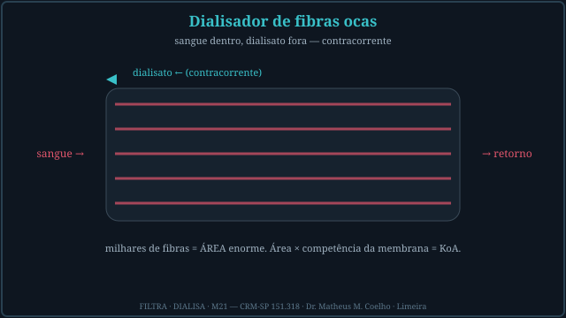
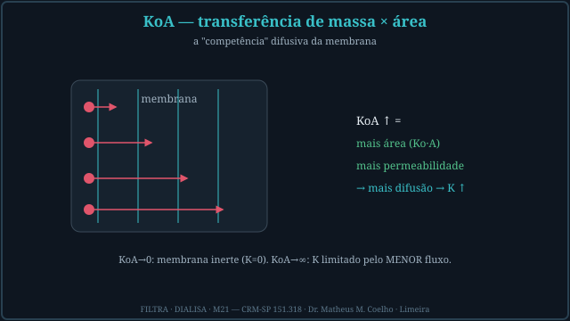
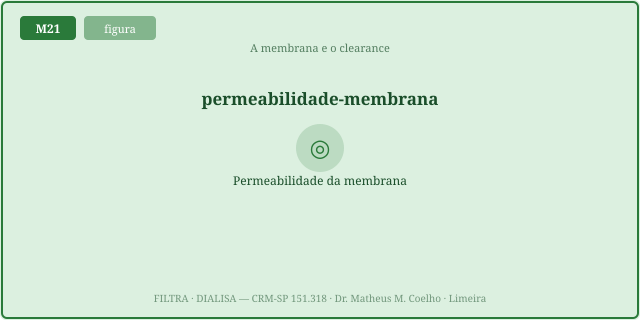
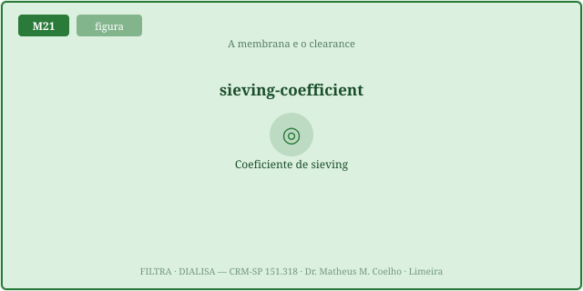
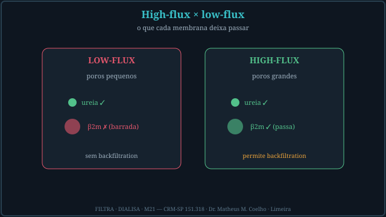
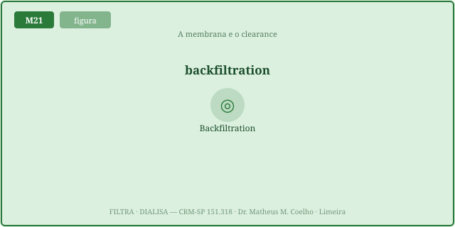
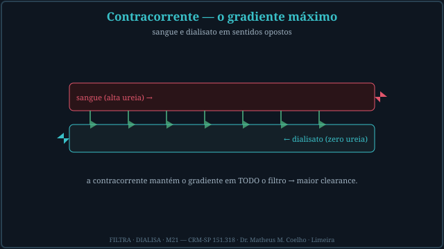
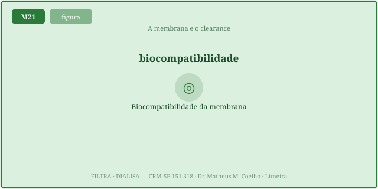

Diálise difusiva é gradiente atravessando uma membrana. O quanto ela depura
depende da membrana (KoA, cutoff) e dos fluxos (Qb, Qd). As Fig. 1–8 voltam no Caso, na Trilha e na
Avaliação. Atribuição em CREDITS.md (em curadoria).
O dialisador é um feixe de milhares de fibras capilares: o sangue corre dentro das fibras, o dialisato corre fora, em contracorrente. As milhares de fibras somam uma área enorme. Área × permeabilidade da membrana = o coeficiente KoA — a "competência" difusiva do filtro (Fig. 1).

KoA (em mL·min⁻¹) é o coeficiente de transferência de massa (Ko) vezes a área (A): mede o quanto a membrana deixa difundir. Dois extremos provam o conceito: KoA → 0 (membrana inerte) → K=0; KoA → ∞ (membrana perfeita) → K limitado pelo menor fluxo (Qb ou Qd), nunca mais (Fig. 2).

Subir o fluxo de sangue (Qb) aumenta o clearance — mas com teto. A curva K(Qb) é côncava: o ganho marginal ∂K/∂Qb decresce. Dobrar Qb não dobra K, porque a membrana (KoA) e o dialisato (Qd) limitam quanto se consegue extrair de cada mililitro de sangue (Fig. 3).

O coeficiente de sieving S (0 a 1) é a fração do soluto que atravessa por convecção. S=1 (passa livre, como a ureia); S=0 (totalmente retido). A sigmoide cai perto do cutoff da membrana. High-flux tem cutoff alto e deixa passar o médio (β2m, ~11,8 kDa); low-flux o barra (Fig. 4).

As duas membranas depuram a ureia igualmente bem (molécula pequena). A diferença está no médio: poros pequenos (low-flux) barram o β2m; poros grandes (high-flux) o deixam passar — e, por serem muito permeáveis à água, permitem backfiltration (Fig. 5).

O motor não é o banho: é a queda axial de pressão do sangue ao longo da fibra. O sangue entra com pressão alta e a perde por atrito enquanto percorre a fibra oca; no trecho distal de uma membrana high-flux (muito permeável à água) a pressão do sangue cai abaixo da do dialisato → fluxo reverso (dialisato → sangue) ali. O driver primário é, então, high-flux + esse gradiente axial (maior quanto maior o Qb); a TMP média baixa apenas favorece o cruzamento e o Qd contribui pouco. Se o banho não for ultrapuro, a endotoxina reflui para o paciente (Fig. 6).


O cutoff é o peso molecular em que o sieving cai a 0,5. Moléculas menores que o poro passam; maiores são retidas. A ureia passa em quase tudo; o β2m só passa se o cutoff for alto; a albumina (66 kDa) idealmente fica retida — perdê-la seria dano (Fig. 8).

Prescrevendo HD. Cinco perguntas sobre a membrana e os fluxos: o que muda o clearance, o que cada membrana remove, e onde mora o perigo. Volte às Fig. 3, 4 e 6: a membrana decide.
De três coisas: KoA (membrana), Qb (fluxo de sangue) e Qd (fluxo de dialisato), na equação K = Qb·(ez−1)/(ez−Qb/Qd), com z = KoA·(1−Qb/Qd)/Qb (Fig. 2/3).
O coeficiente de transferência de massa (Ko) vezes a área (A) — a "competência" difusiva da membrana, em mL·min⁻¹. KoA alto = membrana mais permeável e/ou maior área (Fig. 1/2).
Não. A curva K(Qb) é côncava: o ganho marginal ∂K/∂Qb decresce. Dobrar Qb não dobra K — a membrana e o Qd limitam a extração de cada mL (Fig. 3).
O menor fluxo. K ≤ Qb sempre (não se depura mais sangue do que passa); com KoA enorme, K → min(Qb, Qd). A membrana perfeita não vence a logística dos fluxos (Fig. 2).
A fração do soluto que atravessa por convecção (0 a 1). S=1 = passa livre; S=0 = retido. A sigmoide cai perto do cutoff da membrana (Fig. 4).
Porque é pequena (~60 Da): passa em qualquer cutoff (S ≈ 1). É o médio (β2m, ~11,8 kDa) que separa — só o high-flux o deixa passar (Fig. 4/5).
Fluxo reverso (dialisato → sangue) na porção distal do high-flux. O driver é a queda axial de pressão do sangue ao longo da fibra (cresce com o Qb): no trecho distal a pressão do sangue cai abaixo da do banho. A TMP média baixa favorece; o Qd só contribui um pouco. Em low-flux praticamente não ocorre (Fig. 6).
Porque a backfiltration leva o banho de volta ao sangue. Se o dialisato carrega endotoxina, ela entra no paciente → reação inflamatória. Ultrapuro é segurança, não luxo (Fig. 6).
A membrana, por física (difusão + convecção), repõe a depuração que o rim perdeu — sem substituí-lo. Escolher KoA, cutoff e fluxos é ajustar quais escórias e eletrólitos (K⁺ em mEq/L, ureia, β2m) do meio interno voltam à faixa (Fig. 7/8).
Os controles do Lab movem esta curva. Eixo horizontal = Qb (fluxo de sangue); eixo vertical = clearance (K). A curva azul é K(Qb) para o KoA e o Qd atuais; o marcador é o Qb de operação; a linha tracejada laranja marca o teto (o menor fluxo). Note como a curva achata: dobrar o Qb não dobra o K.
| Saída | Atual | Comentário |
|---|---|---|
| Classe da membrana | — | cutoff baixo × alto |
| Clearance de ureia K (mL/min) | — | soluto pequeno (60 Da) |
| Clearance da β2m (mL/min) | — | molécula média (11,8 kDa) |
| Sieving ureia · β2m | — | fração que atravessa |
| Ganho marginal ∂K/∂Qb | — | cai = saturação |
| Backfiltration | — | fluxo reverso 0..1 |